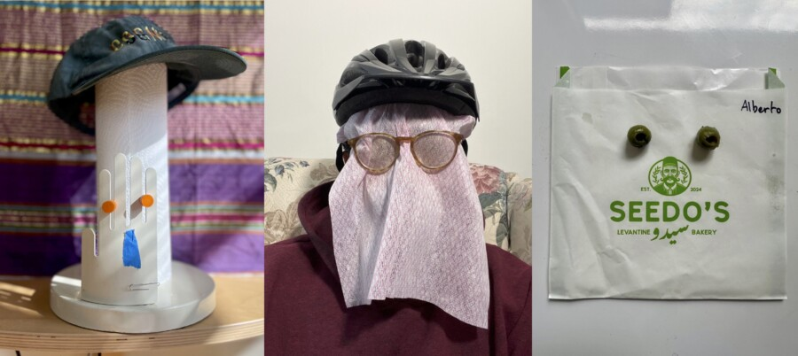

World Play III
World Play III: Alberto Aguilar, Alex Bradley Cohen, & Jesse Malmed
Opening Friday, March 20th 6-9 PM
To kick off a year of Roots & Culture’s 20th Anniversary programming, we are thrilled to welcome back three all star alumni of our program, in collaboration!
Word Play III is a makeshift art exhibition set up near the midnight hour by Jesse Malmed, Alberto Aguilar and Alex Bradley Cohen. The third episode in their World Play series and a dip into an on-going if occasional practice of collaboration, arriving in the midst of a world on fire. Again. Differently. And the same. In World Play 3 these three hench men, bench warmers and beach combers seek and speak play via play by playing any cost necessary, a color commentary, an enunciation in public.
Come have some holy mole, wash it down with some half juice but take off your shoes as you stand amid the roots and culture. This show is free and open to the public but please check in at the merch table upon entry.
This show is not about finding balance, it’s about being comfortable being out of balance. So we play, inviting others to match our energy
Together and separately, Cohen, Aguilar and Malmed, were taught at or teach at SAIC, UIC, Northwestern, Bard, Harold Washington, Columbia College, COD, MCC and UWM, have shown in/on/at museums, car bumpers, grocery stores, film festivals, artist-run spaces, electric poles, curator-run spaces, colleges, collage shops and laundry mats. They live separately across Chicagoland and have a deep affinity for the work Roots and Culture does and has done and are proud to be part of its past, its future and, again this month, its present.